GOLD RUSH · Phase 1
The main menu
You build the title screen of the game by hand: a small 3D stage made from the kit prefabs, the hero who waves at you, a warm lantern and a slowly moving camera. On top of it you build the UI in the game's frosted-glass style: the 3D "GOLD RUSH" logo, the tagline, the PLAY / LEVELS / SHOP buttons and the chips at the top left (settings, day/night, gold, stars). It looks exactly like the real menu.
1What you need
- Your project from Phase 0 (or import
GoldRush_Phase00_Project.unitypackageinto a new Universal 3D project, see Phase 0). - The folder
GoldRush_Export/Resources/Scripts/Helpers/(the big helper scripts you import). - No new packages. The UI uses Unity UI (uGUI), which is already in the project.
This is the goal. At the end of this phase your Game view looks like this:

2How the menu works
Read this first. Then every step makes sense.
- You build everything by hand and it is saved in the scene: the 3D stage, the camera, the Canvas, every image and every text.
- The script
GoldRushMenuonly connects the pieces. It has fields (slots in the Inspector). You drag your objects into them. When the game starts, it writes your gold into the gold chip, moves the camera, makes the hero wave and slides the buttons in. - A button knows what to do by a word. Each menu button has a small script,
MenuAction, with a word likeplayorlevels. On click it callsGoldRushMenu.Run(word).
The glass style. Every chip and button is made of a few stacked images. From back to front:
| Layer | What it does |
|---|---|
Shadow | A soft dark copy, a little lower. The piece seems to float. |
Tint | Dark navy, see-through. White text stays readable on a bright background. |
Glass (or Face) | The frosted surface. It is the part that gets the clicks. |
Edge | A thin bright outline in the same shape. |
You build each recipe once, save it as a prefab in Prefabs/UI, and reuse it. In phase 9 you reuse the same prefabs for the game HUD.
3Import the helper scripts
These scripts are long, so you import them. Do not type them. Drag each file from GoldRush_Export/Resources/Scripts/Helpers/ into the same folder under Assets/GoldRush/Scripts/.
| File (from Helpers/ to Scripts/) | What it does |
|---|---|
Core/Tween.cs, Core/TweenRunner.cs | Small animations from code: move, fade, scale, punch. The buttons slide in with it. |
Core/Fader.cs | A black screen that fades in when a scene starts (and out when a scene changes). |
Core/GameAssets.cs | A list of project files the scripts need: the hero model, the sounds, the sky. You make one in step 7. |
Audio/AudioFX.cs, Audio/Synth.cs | Plays the sounds and the music: AudioFX.Play("click"). |
UI/UIKit.cs | The UI toolbox: colours, fonts, the shapes, and helpers that build cards from code (phase 2). |
UI/ButtonFX.cs | The button feel: it grows when you point at it, a light sweeps over it, it shrinks when you press it. |
UI/LogoTitle.cs | The 3D "GOLD RUSH" logo. It stacks 15 text layers. The logo tilts toward the mouse and wobbles when you point at it. |
UI/DayNightButton.cs | The sun / moon button: switches between day and night. |
World/DayNight.cs, World/NightLight.cs, World/EnvironmentSetup.cs | The mood: sky, fog, ambient light, glow (bloom) and the night lights. |
- Drag the files in. They are all new, so nothing is replaced. (Unity never replaces a file you drag in: if the name already exists, it adds a copy called, for example,
UIKit 1.cs. Delete such a copy at once.) - Unity shows red errors in the Console now: the scripts need
SaveandGoldRushMenu. That is normal. You type them in the next steps, then the errors are gone.
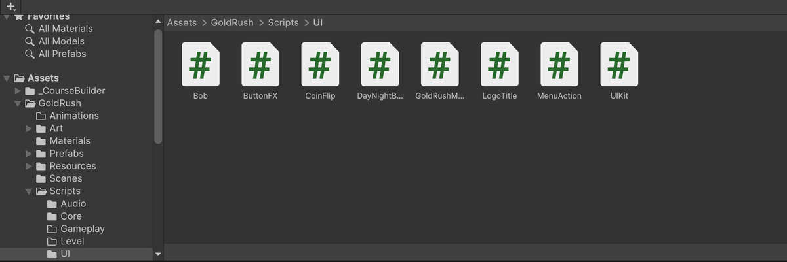
4Script: Data (save data)
The game remembers your gold, your settings and more. Create Assets/GoldRush/Scripts/Core/Data.cs (right-click the folder → Create → Scripting → Empty C# Script, name it Data, open it and replace everything in the file). This is the phase 1 version: only the save data. In phase 2 you replace it with the full file.
using System;
using System.Collections.Generic;
using UnityEngine;
namespace GoldRush
{
// PHASE 1 VERSION: only the save data. Phase 2 replaces this file (levels, shop, daily rush).
public enum EnemyType { Patroller, Chaser, Guard }
public enum PowerType { Speed, Ghost, Magnet }
// ------------------------------------------------------------------ Save
[Serializable]
public class LevelProgress
{
public int stars;
public float bestTime = -1f;
}
[Serializable]
public class SaveData
{
public int version = 1;
public int gold;
public int unlocked = 1;
public List<LevelProgress> levels = new List<LevelProgress>();
public List<string> owned = new List<string>();
public string color = "color_blue";
public string hat = "hat_none";
public bool music = true;
public bool sfx = true;
public bool night = true; // day/night look: ONE setting for the menu and every level
public bool seenTutorial;
public string dailyDate = "";
public float dailyBest = -1f;
public bool dailyCleared;
}
public static class Save
{
const string Key = "goldrush_save_v1";
static SaveData data;
public static SaveData Data
{
get { if (data == null) Load(); return data; }
}
public static void Load()
{
string json = PlayerPrefs.GetString(Key, "");
data = null;
if (!string.IsNullOrEmpty(json))
{
try { data = JsonUtility.FromJson<SaveData>(json); }
catch (Exception e) { Debug.LogWarning("[GoldRush] Save corrupted, resetting: " + e.Message); }
}
if (data == null) data = new SaveData();
Fix();
}
static void Fix()
{
if (data.levels == null) data.levels = new List<LevelProgress>();
if (data.owned == null) data.owned = new List<string>();
if (!data.owned.Contains("color_blue")) data.owned.Add("color_blue");
if (!data.owned.Contains("hat_none")) data.owned.Add("hat_none");
}
public static void Persist()
{
if (data == null) return;
PlayerPrefs.SetString(Key, JsonUtility.ToJson(data));
PlayerPrefs.Save();
}
[RuntimeInitializeOnLoadMethod(RuntimeInitializeLoadType.SubsystemRegistration)]
static void ResetStatics() { data = null; }
}
}SaveDatais everything we save: gold, unlocked levels, stars, owned shop items, colour, hat, music, sound andnight(the day/night look).Save.Datagives you the save. The first time you use it,Load()reads it from PlayerPrefs (a small save box that Unity gives every game).Save.Persist()turns the data into JSON text and stores it.JsonUtilitydoes the work.EnemyTypeandPowerTypeare lists of names. Other scripts need them (monsters in phase 7, power-ups in phase 8).
5Scripts: MenuAction, CoinFlip, Bob
Three small UI scripts. For each one: right-click Assets/GoldRush/Scripts/UI/ → Create → Scripting → MonoBehaviour Script, give it the name, open it and replace everything with the code.
MenuAction.cs
using UnityEngine;
using UnityEngine.UI;
namespace GoldRush
{
/// <summary>
/// Connects a menu Button to an action by NAME, so it keeps working when the menu is saved in the scene
/// (click listeners added from code are not saved). Change "action" in the Inspector to rewire a button:
/// play, levels, shop, back, settings.
/// </summary>
[RequireComponent(typeof(Button))]
public class MenuAction : MonoBehaviour
{
public string action = "play";
void Awake()
{
GetComponent<Button>().onClick.AddListener(() =>
{
AudioFX.Play("click");
if (GoldRushMenu.I) GoldRushMenu.I.Run(action);
});
}
}
}[RequireComponent(typeof(Button))]: Unity only lets you add it to an object that has a Button.- In
Awakeit listens to the button click. On click it plays theclicksound and callsGoldRushMenu.I.Run(action). GoldRushMenu.Iis the one menu in the scene (a singleton: a class with one shared copy).- Why a word and not the On Click () list of the Button? A word is easy to read and change in the Inspector, and the same script works for every button.
CoinFlip.cs
using UnityEngine;
namespace GoldRush
{
/// <summary>Makes a flat UI coin look like a spinning 3D coin: every few seconds it flips around
/// its vertical axis (scale.x follows a cosine, like seeing the coin edge-on).</summary>
public class CoinFlip : MonoBehaviour
{
public float interval = 2.6f, flipTime = 0.55f;
float t;
void Update()
{
t += Time.unscaledDeltaTime;
float cycle = t % interval;
float x = cycle < flipTime ? Mathf.Cos(cycle / flipTime * Mathf.PI * 2f) : 1f;
// keep a sliver of width so it never fully disappears
transform.localScale = new Vector3(Mathf.Sign(x) * Mathf.Max(0.08f, Mathf.Abs(x)), 1f, 1f);
}
}
}- Every 2.6 seconds the flat coin icon "turns around": its Scale X follows a cosine, so it looks like a 3D coin seen from the side.
Bob.cs
using UnityEngine;
namespace GoldRush
{
/// <summary>Idle UI animation: vertical bob, gentle rotation wobble and/or scale pulse (unscaled time).</summary>
public class Bob : MonoBehaviour
{
[SerializeField] float amplitude, speed, wobble, pulse, phase;
[SerializeField] Vector2 basePos;
[SerializeField] Quaternion baseRot;
[SerializeField] RectTransform rt;
public void Setup(float amplitude, float speed, float wobbleDegrees, float pulse = 0f)
{
this.amplitude = amplitude; this.speed = speed; wobble = wobbleDegrees; this.pulse = pulse;
Remember();
}
/// <summary>Remembers where the object starts (added by hand: set the numbers in the Inspector).</summary>
void Remember()
{
rt = transform as RectTransform;
basePos = rt ? rt.anchoredPosition : Vector2.zero;
baseRot = transform.localRotation;
phase = Random.Range(0f, 10f);
}
void Awake() { if (!rt) Remember(); }
void Update()
{
if (!rt) return;
float t = Time.unscaledTime * speed + phase;
if (amplitude != 0f) rt.anchoredPosition = basePos + Vector2.up * (Mathf.Sin(t) * amplitude);
if (wobble != 0f) transform.localRotation = baseRot * Quaternion.Euler(0, 0, Mathf.Sin(t * 0.7f) * wobble);
if (pulse != 0f) transform.localScale = Vector3.one * (1f + Mathf.Sin(t * 1.3f) * pulse);
}
}
}- An idle animation for UI: Amplitude moves it up and down, Wobble rotates it, Pulse makes it grow and shrink. Speed sets how fast.
Awakeremembers the start position, so you can add it by hand in the Inspector.Time.unscaledTime: the animation keeps going even when the game is paused.
6Script: GoldRushMenu (phase 1)
The menu brain. Create Assets/GoldRush/Scripts/UI/GoldRushMenu.cs and type it in. This is the phase 1 version (title screen only). In phase 2 you replace it with a bigger version, and in phase 10 with the final file. The fields stay the same, so your connections in the Inspector are kept.
using System.Collections.Generic;
using UnityEngine;
using UnityEngine.UI;
namespace GoldRush
{
/// <summary>
/// Main menu scene root. PHASE 1 VERSION: only the title screen.
/// The stage and the screens are normal GameObjects saved in MainMenu.unity. This script only connects
/// them: buttons with a <see cref="MenuAction"/> call <see cref="Run"/>, and the gold is filled in when
/// the scene starts. Phase 2 replaces this file (Levels, Shop, Settings).
/// </summary>
public class GoldRushMenu : MonoBehaviour
{
enum Screen { Title, Levels, Shop }
public static GoldRushMenu I { get; private set; }
[Header("Stage (saved in the scene)")]
[SerializeField] Camera cam;
[SerializeField] Transform playerRoot;
[SerializeField] Animator playerAnim;
[SerializeField] Light lantern;
[SerializeField] List<Light> menuGlows = new List<Light>();
[Header("Screens (saved in the scene)")]
[SerializeField] RectTransform canvasRt;
[SerializeField] RectTransform titleScreen, levelScreen, shopScreen, settingsRoot, settingsPanel;
[SerializeField] GameObject[] topRight;
[SerializeField] RectTransform[] entrance;
[Header("Filled in at runtime")]
[SerializeField] RectTransform goldPill;
[SerializeField] Text goldText, titleGoldText, starsText, playSubtitle;
[SerializeField] RectTransform starsBar, levelCards, shopTabs, shopGrid;
[SerializeField] Button musicToggle, soundToggle;
Screen current = Screen.Title;
float lookSide = -1.3f, lookSideTarget = -1.3f, camDist = 5.6f, camDistTarget = 5.6f;
int shownGold;
void Awake() { I = this; Application.targetFrameRate = 60; Time.timeScale = 1f; }
void OnDestroy() { if (I == this) I = null; }
void Start()
{
UIKit.EnsureEventSystem();
AudioFX.StartMusic();
EnvironmentSetup.Apply(cam, true, true); // the menu uses the spooky night mood
if (lantern) DayNight.RegisterNightLight(lantern);
foreach (var g in menuGlows) DayNight.RegisterNightLight(g);
RefreshTitle();
UpdateCamera(1f);
Show(Screen.Title, true);
PlayEntrance();
Fader.FadeIn();
}
/// <summary>Puts the saved gold into the title screen. (Phase 2 adds the stars and the PLAY subtitle.)</summary>
void RefreshTitle()
{
shownGold = Save.Data.gold;
if (titleGoldText) titleGoldText.text = shownGold.ToString();
if (goldText) goldText.text = shownGold.ToString();
}
/// <summary>Entrance animation: the buttons slide in from the left.</summary>
void PlayEntrance()
{
for (int k = 0; k < entrance.Length; k++)
{
var rt = entrance[k];
if (!rt) continue;
Vector2 target = rt.anchoredPosition;
rt.anchoredPosition = target + Vector2.left * 640f;
Tween.Move(rt, target, 0.55f, Tween.OutBack, 0.15f + k * 0.08f);
}
}
float nextWave = 3f;
void Update()
{
// the hero waves at the player now and then
if (current == Screen.Title && Time.time > nextWave && playerAnim)
{
nextWave = Time.time + 9f;
playerAnim.SetTrigger(AnimParams.Win);
}
if (playerRoot)
{
float yaw = current == Screen.Shop ? 180f + 28f * Mathf.Sin(Time.time * 0.7f) : 180f;
playerRoot.rotation = Quaternion.Slerp(playerRoot.rotation, Quaternion.Euler(0, yaw, 0), 1f - Mathf.Exp(-3f * Time.deltaTime));
}
if (Input.GetKeyDown(KeyCode.Escape) && current != Screen.Title) Show(Screen.Title);
// animated gold counter
int g = Save.Data.gold;
if (shownGold != g)
{
shownGold = (int)Mathf.MoveTowards(shownGold, g, Mathf.Max(1, Mathf.Abs(g - shownGold) * 6f * Time.unscaledDeltaTime));
if (goldText) goldText.text = shownGold.ToString();
if (titleGoldText) titleGoldText.text = shownGold.ToString();
}
}
void LateUpdate() { UpdateCamera(Time.deltaTime); }
void UpdateCamera(float dt)
{
if (!cam) return;
float k = 1f - Mathf.Exp(-3.5f * dt);
lookSide = Mathf.Lerp(lookSide, lookSideTarget, k);
camDist = Mathf.Lerp(camDist, camDistTarget, k);
float yaw = 10f * Mathf.Sin(Time.time * 0.22f);
var rot = Quaternion.Euler(7f, yaw, 0);
Vector3 right = rot * Vector3.right;
Vector3 look = new Vector3(0, 0.8f, 0) + right * lookSide;
cam.transform.SetPositionAndRotation(look - rot * Vector3.forward * camDist, rot);
}
void Show(Screen s, bool instant = false)
{
current = s;
if (topRight != null) foreach (var item in topRight) if (item) item.SetActive(s != Screen.Title);
titleScreen.gameObject.SetActive(s == Screen.Title);
if (levelScreen) levelScreen.gameObject.SetActive(s == Screen.Levels);
if (shopScreen) shopScreen.gameObject.SetActive(s == Screen.Shop);
var g = titleScreen.GetComponent<CanvasGroup>(); // phase 1: the title is the only screen
if (!instant) { g.alpha = 0; Tween.Fade(g, 1f, 0.25f); AudioFX.Play("whoosh", 0.5f); }
else g.alpha = 1;
switch (s)
{
case Screen.Title: lookSideTarget = 0f; camDistTarget = 6.2f; break; // hero centre stage
case Screen.Levels: lookSideTarget = 0f; camDistTarget = 8f; break;
case Screen.Shop: lookSideTarget = 1f; camDistTarget = 3.8f; break;
}
}
/// <summary>Called by MenuAction buttons ("play", "levels", "shop", "back", "settings", "closeSettings").</summary>
public void Run(string action)
{
switch (action)
{
case "play": Debug.Log("[GoldRush] PLAY: you build the first level in phase 3."); break;
case "levels":
case "shop":
case "back":
case "settings":
case "closeSettings": Debug.Log("[GoldRush] Menu action '" + action + "': you build this screen in phase 2."); break;
default: Debug.LogWarning("[GoldRush] Unknown menu action: " + action); break;
}
}
}
}- The
[SerializeField]fields are the slots you fill in step 18.[Header]puts a title above each group in the Inspector. Start(): starts the music, sets the night mood (EnvironmentSetup.Apply), lights the lantern at night, writes the gold, shows the Title screen, slides the buttons in and fades in from black.Update(): every 9 seconds the hero waves (SetTrigger(AnimParams.Win)). The gold number counts up smoothly when it changes.UpdateCamera(): the camera looks at the hero from 6.2 m and slowly swings left and right (Mathf.Sin). It runs inLateUpdate, after everything else moved.Show(): shows one screen and fades it in with its Canvas Group. Each screen has its own camera distance.Run(action): the words of the buttons. In phase 1 they only write a message in the Console.
Wait for Unity to compile. The Console must show no red errors now.
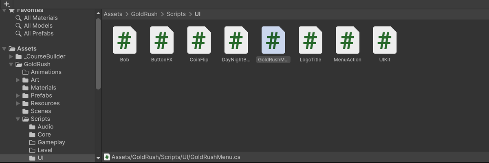
7Create the GoldRushAssets asset
GameAssets is a ScriptableObject: a data file in the Project window, filled in the Inspector. The scripts load it by name from Resources.
- Right-click
Assets/GoldRush/Resources→ Create → Gold Rush → Game Assets. - Name it exactly
GoldRushAssets. - Select it. In the Inspector, fill in the fields from this table (drag the files from the Project window):
| Field | Drag in |
|---|---|
| Hero → Model | Art/Characters/Hero/Hero.fbx (leave Controller empty for now, you make it in step 8; Height stays 1.35) |
| Lit, Lit Emissive, Lit Transparent, Particle | Materials/GR_Lit, GR_LitEmissive, GR_LitTransparent, GR_Particle |
| Skybox | Materials/GR_SunsetSky |
| Sounds | All 16 .wav files from Art/Audio (see below) |
- To add all sounds at once: click the small lock icon at the top right of the Inspector (so it keeps showing GoldRushAssets).
- Open
Art/Audio. Click the first.wav, hold Shift and click the last one. - Drag the selection onto the word Sounds in the Inspector. The list now has 16 elements.
- Click the lock icon again to unlock the Inspector.
The file name is the sound name: click.wav plays with AudioFX.Play("click"), music.wav is the background music.
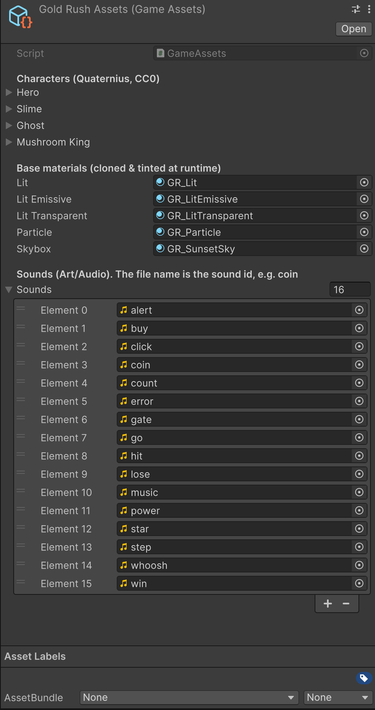
8Hero animations: Idle and Wave
The hero model has its animations inside the .fbx file. For the menu you need two: Idle (stand and breathe) and Wave. In phase 4 you add walk, run and more to the same controller.
Import settings
- Select
Art/Characters/Hero/Hero.fbx. - Inspector → Rig tab: Animation Type = Generic, Avatar Definition = Create From This Model. Click Apply.
- Animation tab: in the Clips list click the clip that ends with
Idle. Tick Loop Time and Loop Pose. - Click the clip that ends with
Wave. Tick Loop Time and Loop Pose. - Click Apply at the bottom.
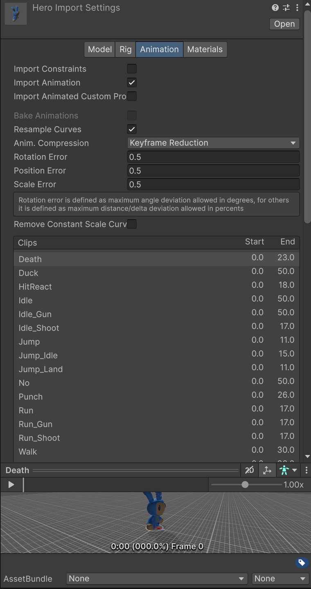
The Animator Controller
An Animator Controller is a little map of animation states and the transitions (arrows) between them.
- Right-click
Assets/GoldRush/Animations→ Create → Animation → Animator Controller. Name itHero. - Double-click it. The Animator window opens.
- On the left, click Parameters → + → Trigger. Name it
Win. (A trigger is a one-time signal.) - In the Project window, open
Hero.fbx(click its little arrow). Drag theIdleclip into the Animator graph. It becomes orange: the default state. Rename the stateIdle. - Drag the
Waveclip into the graph. Rename this stateWin. - Right-click Any State → Make Transition → click
Win. Select the new arrow and set: Has Exit Time off, Transition Duration0.1, Can Transition To Self off, Conditions → + →Win. - Right-click
Win→ Make Transition → clickIdle. Select the arrow and set: Has Exit Time on, Exit Time3, Transition Duration0.2. (The hero waves 3 times, then goes back to Idle.) - Select
Resources/GoldRushAssetsand dragHero.controllerinto Hero → Controller.
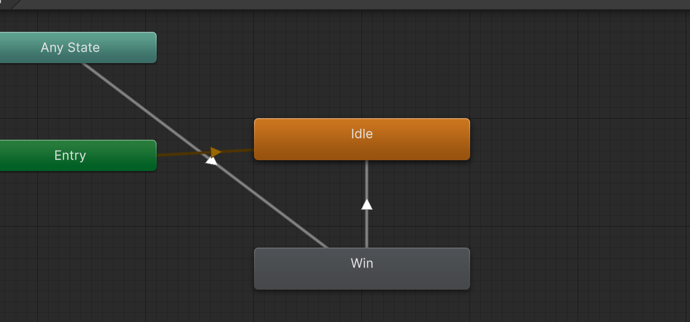
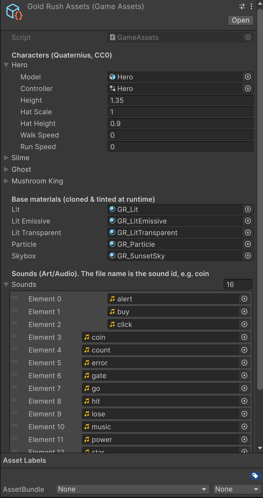
9Create the MainMenu scene
- File → New Scene → Basic (URP) → Create.
- File → Save As… →
Assets/GoldRush/Scenes/MainMenu.unity. - In the Hierarchy, delete Directional Light. (The menu script makes its own moonlit "Sun" when you press Play.)
- Select Main Camera and set:
Component Values Transform Position -1.3, 1.48, -5.56, Rotation7, 0, 0Camera Field of View 40, Clipping Planes Near0.1, Far400 - GameObject → Create Empty. Name it
GoldRushMenu. Position0, 0, 0. - Inspector → Add Component → Gold Rush Menu.
The camera values are the start values of the script. When you press Play, GoldRushMenu moves the camera itself.
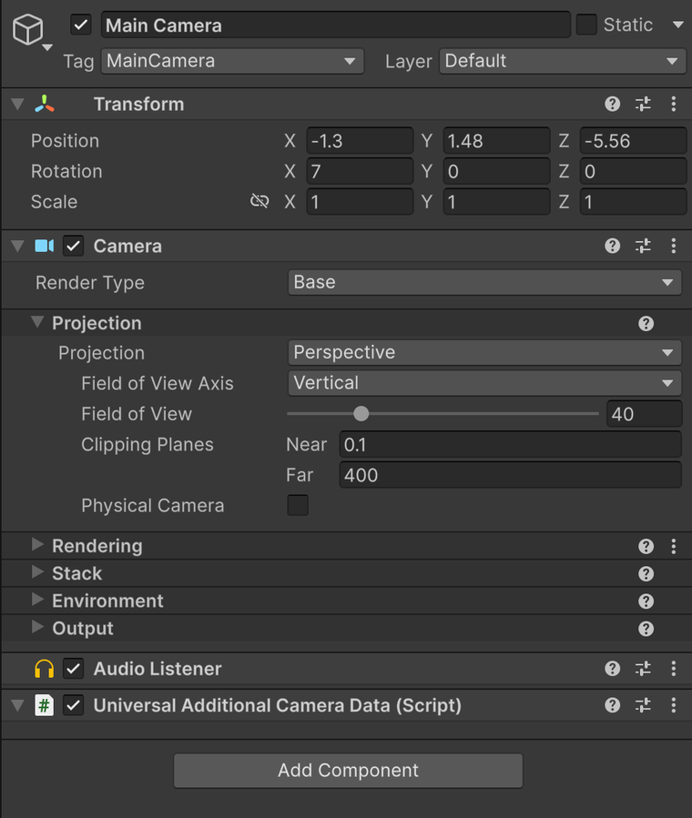
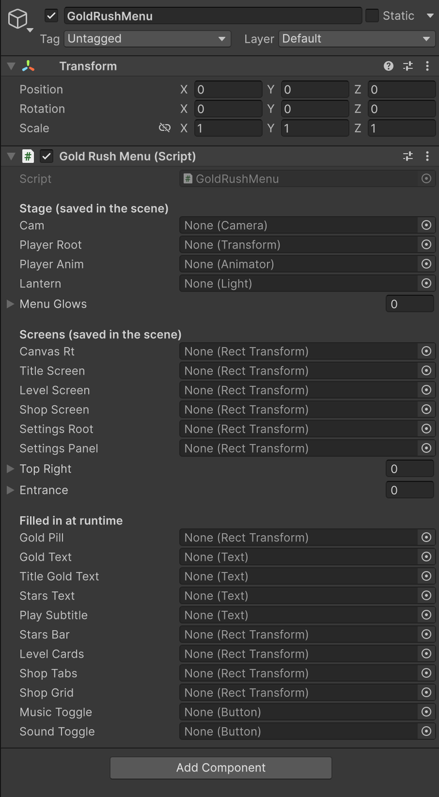
10Build the 3D stage from the kit
The stage is a small yard behind the hero: walls at the back, blocks, pillars, lamps. First make empty "folders" for it.
- GameObject → Create Empty. Name it
MenuDiorama. Position0, 0, 0. - Right-click
MenuDiorama→ Create Empty seven times. Name the childrenFloor,Walls,Obstacles,Lamps,Decor,Scenery,Dynamic. All at0, 0, 0. - Drag each prefab from
Prefabs/Level(orPrefabs/Gameplayfor the coins) onto its group in the Hierarchy. Then type its Position, Rotation Y and Scale from the table. Empty cells mean: leave the default (rotation 0, scale 1).
| Group | Prefab | Position | Rotation Y | Scale |
|---|---|---|---|---|
Floor | Floor_40m | 0, 0, 0 | ||
Scenery | OuterGround | 0, 0, 0 | ||
Walls | Wall_8m | -6.15, 0, 11 | ||
Wall_8m | 6.35, 0, 11.5 | |||
AccentBlock_Teal | -1.8, 0, 11 | |||
Pillar | 2.2, 0, 11.5 | |||
Wall_4m | -10.5, 0, 7.45 | 90 | ||
Obstacles | Block_2x2x2 | -8.6, 0, 8 | ||
Block_2x2x2 | 9.2, 0, 9 | |||
AccentBlock_Red | -7.6, 0, 2.2 | |||
Block_2x2x2 | 7.4, 0, 2.4 | |||
AccentBlock_Orange | 7.6, 2, 2.2 (on top of the block) | |||
AccentBlock_Teal | -2.4, 0, 8.6 | |||
Block_2x2x2 | 10, 0, -1.5 | |||
Pillar | -5.8, 0, 9.3 | |||
Pillar | 8.8, 0, 5.6 | |||
Barrier_Orange | 0, 0, 9.9 | |||
Terminal | 1.7, 0, 8.2 | |||
Terminal | -9.3, 0, -0.6 | 90 | ||
Lamps | LampPost | -4.6, 0, 6.4 | ||
LampPost | 4.6, 0, 6.2 | |||
LampPost | -9.6, 0, 3.2 | |||
Decor | FloorPad_Cyan | 0, 0, 0 (the hero stands on it) | 2, 1, 2 | |
FloorPad_Cyan | -7, 0, -3 | |||
Dynamic | Coin (from Prefabs/Gameplay) | -5.2, 1, 4.2 | ||
Coin | -6.2, 1, 5 |
Night lamps. The lamps should only shine at night. Do this for each of the three LampPosts:
- Open the
LampPostin the Hierarchy and select its childLampLight. - Add Component → Night Light. Set Night Intensity to
2.2(the third lamp, at-9.6, 0, 3.2:2).
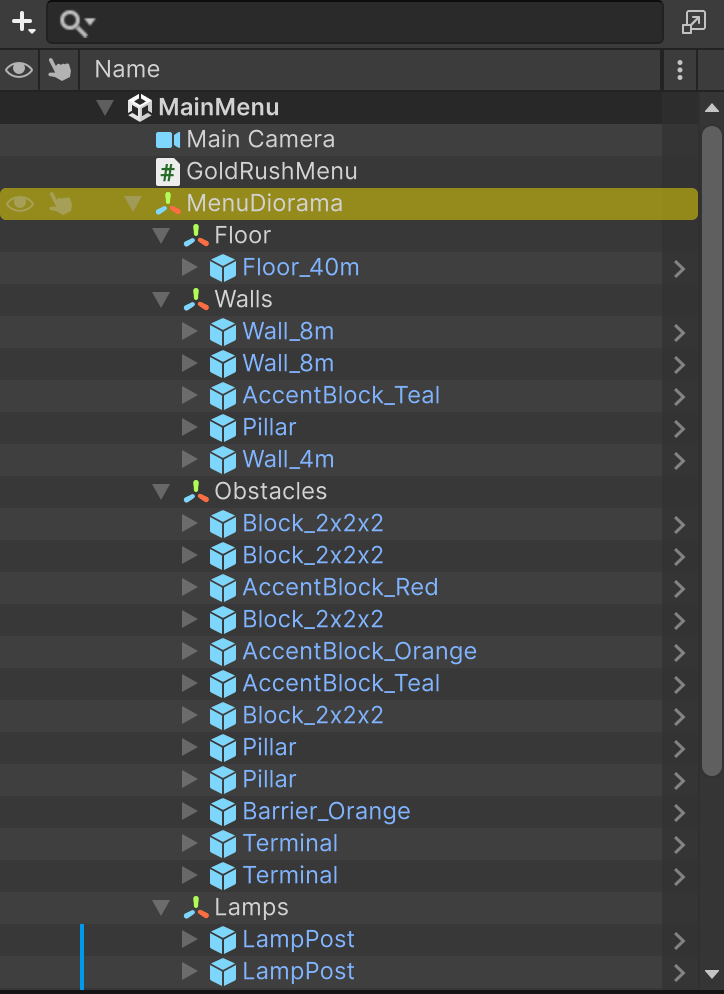
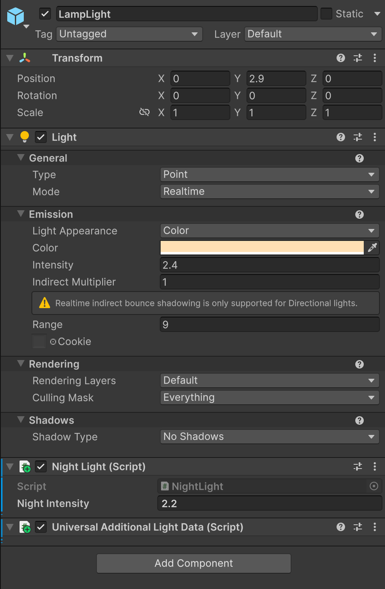
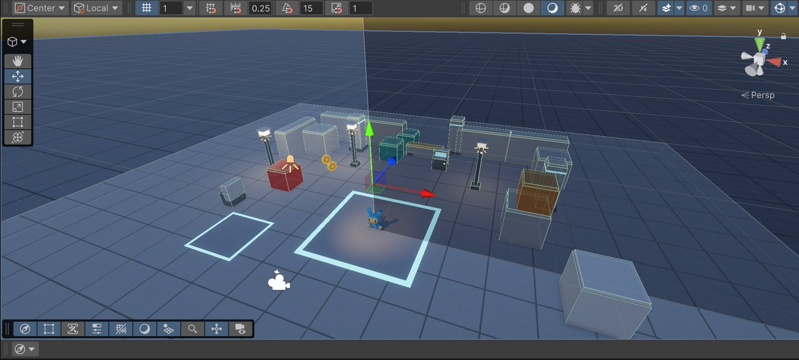
11Add the hero and the lantern
The hero
- GameObject → Create Empty. Name it
MenuPlayer. Position0, 0, 0, Rotation0, 180, 0(he looks at the camera). - Drag
Art/Characters/Hero/Hero.fbxontoMenuPlayer. Rename the new childModel. - Select
Model. Position0, 0.068, 0, Rotation0, 0, 0, Scale0.337, 0.337, 0.337. - In its Animator component: Controller =
Hero, Apply Root Motion off, Culling Mode = Always Animate.
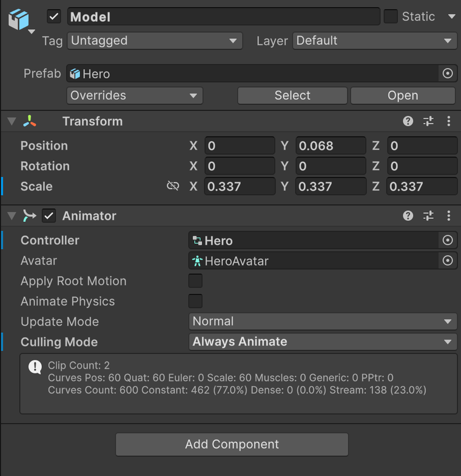
The lantern
A warm spot light from above-left shines on the hero, like a lantern.
- GameObject → Light → Spotlight. Name it
Lantern. - Position
-1.5, 5.5, -3.5, Rotation52.7, 23.2, 0. - Light: Colour
FFD18C, Intensity20, Range14, Outer Spot Angle55, Shadow Type Soft Shadows.

| Name (empty, root) | Position | Rotation Y | Child Model (the .fbx) | Child Glow (Point Light) |
|---|---|---|---|---|
MenuPatroller | -3.4, 0, 3.2 | 160 | Slime.fbx, Pos Y 0.006, Scale 0.508 | Pos 0, 0.52, 0.35, 40FF99, Intensity 2.2, Range 3.02 |
MenuChaser | 3.2, 0.4, 3.6 | 205 | Ghost.fbx, Pos Y -0.034, Scale 0.393 | Pos 0, 0.715, 0.35, FF4CCC, Intensity 2.2, Range 3.58 |
MenuGuard | 5.6, 0, 8.5 | 210 | MushroomKing.fbx, Pos Y 0.125, Scale 0.679 | Pos 0, 1.43, 0.35, FFCC40, Intensity 3, Range 5.66 |
Glow lights into Menu Glows, so they only shine at night.12Add the Canvas and the Title screen
- Right-click
GoldRushMenu→ UI → Canvas. Name itMenuUI. (Unity also adds an EventSystem at the root. Keep it: buttons need it to get clicks.) - Canvas: Render Mode Screen Space - Overlay, Sort Order
10. - Canvas Scaler: UI Scale Mode Scale With Screen Size, Reference Resolution
1920 × 1080, Screen Match Mode Match Width Or Height, Match0.5. - In the Game view, open the aspect menu (top left, "Free Aspect") and pick Full HD (1920x1080).
- Right-click
MenuUI→ Create Empty. Name itTitle. - Rect Transform → click the anchor preset box → hold Alt and click the bottom-right box (stretch / stretch). Left, Top, Right and Bottom are all
0. - Add Component → Canvas Group. (The menu uses it to fade the screen in.)
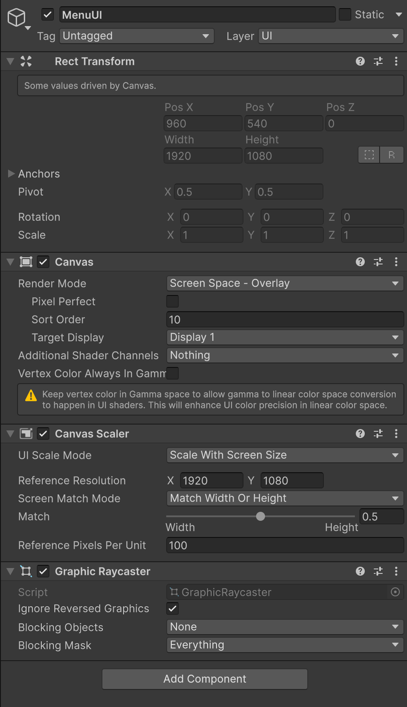
- Create: Empty = right-click the parent → Create Empty. Image = right-click → UI → Image. Text = right-click → UI → Legacy → Text. Rename it at once.
- Anchor: click the anchor preset box. Hold Shift while you click: the Pivot moves to the same corner. If the table gives a different Pivot, type it.
- stretch + L B R T: the object fills its parent. Hold Alt and click the bottom-right preset, then type Left, Bottom, Right, Top. "stretch 0" means all four are
0. - Colour
F2F7FF · 230: click the colour field, typeF2F7FFin Hexadecimal, then set A (alpha, 0–255) to230. No number = 255. - Images: put the sprite from
Resources/UISprites(orResources/Icons) into Source Image. Untick Raycast Target, unless the table says raycast. Withpill,pillo,rrandrro2the Image Type must be Sliced; then type the Pixels Per Unit Multiplier (PPU in the tables). - Texts: Font from
Resources/Fonts. Untick Raycast Target. Set Horizontal Overflow and Vertical Overflow to Overflow, unless the table says Best Fit: then tick Best Fit, type Min and Max Size, and keep Wrap / Truncate. - Outline / Shadow = Add Component → UI → Effects → Outline (or Shadow). Effect Colour
050A1F · 115, Effect Distance as written.
Now the two dark fades behind the logo and behind the buttons:
| Object (parent) | Create | Anchor / Pivot | Position and size | Image |
|---|---|---|---|---|
BackdropTop (Title) | Image | top stretch, pivot 0.5, 1 | Left 0, Right 0, Pos Y 0, Height 420 | fadeD, 080D1F · 153 |
BackdropLeft (Title) | Image | left stretch, pivot 0, 0.5 | Pos X 0, Width 820, Top 0, Bottom 0 | fadeR, 080D1F · 153 |
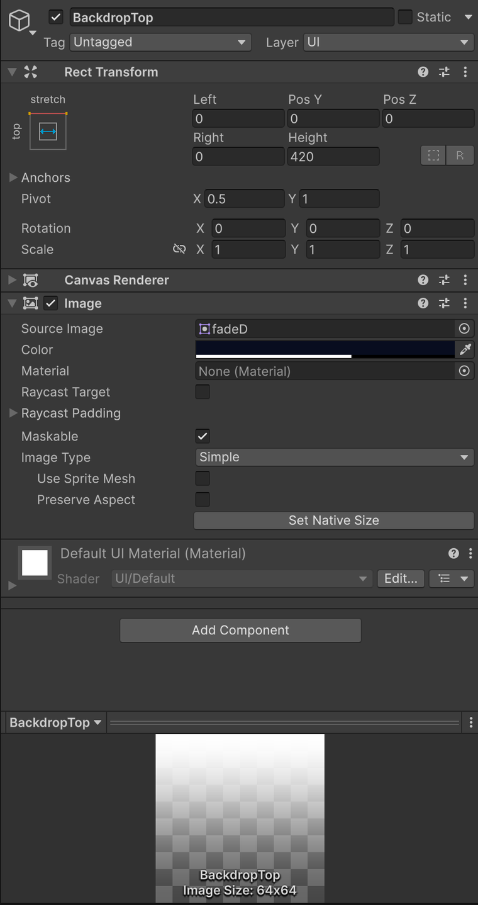
13Glass recipe 1: round chips
The round chips at the top left are the settings button (gear) and the day/night button. Build the round glass once.
- Right-click
Title→ Create Empty. Name itGlassCircle. - Anchor top left (with Shift: pivot
0, 1). Pos32, -30. Size76 × 76. - Add the four layers:
| Object (parent) | Create | Sprite | Colour | Rect | Other |
|---|---|---|---|---|---|
Shadow (GlassCircle) | Image | circle | 000000 · 36 | stretch L 0, B -4, R 0, T 2 | |
Tint (GlassCircle) | Image | circle | 080D1F · 97 | stretch 0 | |
Glass (GlassCircle) | Image | circle | FFFFFF · 20 | stretch 0 | raycast (keep Raycast Target on) |
Edge (Glass) | Image | ring2 | FFFFFF · 179 | stretch 0 |
- Drag
GlassCirclefrom the Hierarchy intoAssets/GoldRush/Prefabs/UI. Pick Original Prefab. It turns blue. - Rename the object in the Hierarchy to
Btn_Gear. (The prefab file keeps the name GlassCircle.)
The gear button
| Object (parent) | Create | Anchor / Pivot | Pos / Size | Image |
|---|---|---|---|---|
Icon_Gear (Btn_Gear/Glass) | Empty | middle centre | 0, 0 / 35 × 35 | – |
Glyph (Icon_Gear) | Image | stretch 0 | – | ic_settings, F2F7FF, tick Preserve Aspect |
- Select
Btn_Gear. Add Component → Button. DragBtn_Gear/Glassinto Target Graphic. - Add Component → Button FX. Tick Flat.
- Add Component → Menu Action. Type
settingsin Action.
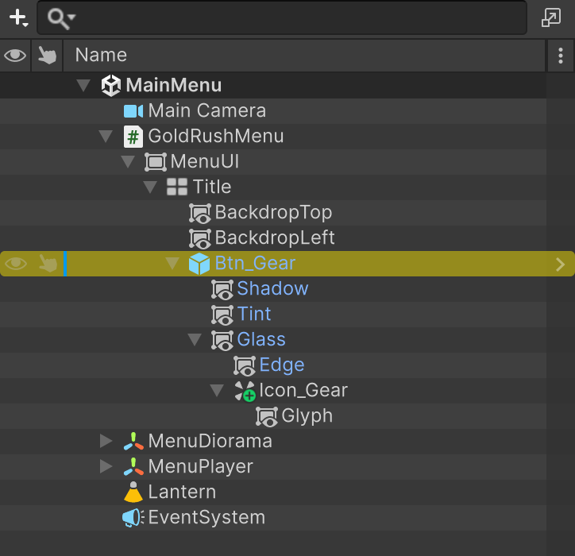
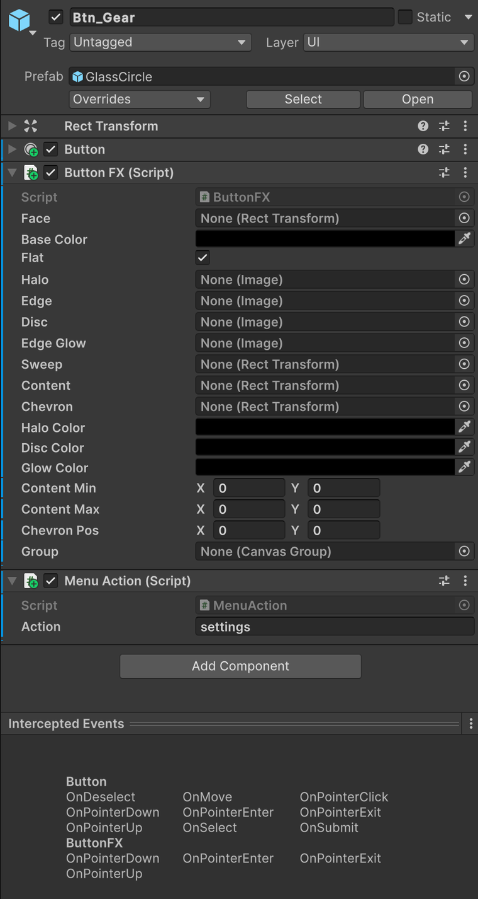
The day/night button
- Drag the
GlassCircleprefab fromPrefabs/UIontoTitle. Rename itDayNight. Pos122, -30, size76 × 76. - Add the two icons (both are children of
DayNight/Glass):
| Object (parent) | Create | Anchor / Pivot | Pos / Size | Image |
|---|---|---|---|---|
Icon_Sun (DayNight/Glass) | Empty | middle centre | 0, 0 / 42.56 × 42.56 | – |
Glyph (Icon_Sun) | Image | stretch 0 | – | ic_light_mode, FFC233, Preserve Aspect |
Icon_Moon (DayNight/Glass) | Empty | middle centre | 0, 0 / 42.56 × 42.56 | – |
Glyph (Icon_Moon) | Image | stretch 0 | – | ic_dark_mode, F2F7FF, Preserve Aspect |
- Untick
Icon_Moon(top of the Inspector). The script switches the two icons. - Select
DayNight. Add Component → Button, Target Graphic =DayNight/Glass. - Add Component → Day Night Button. Drag
Icon_Suninto Sun andIcon_Mooninto Moon.
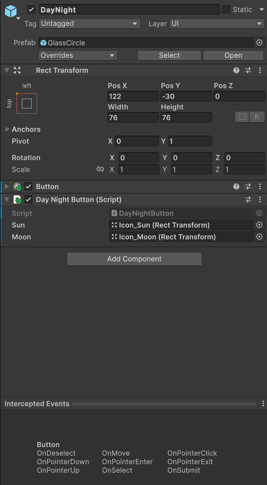
14Glass recipe 2: pill chips
A pill is a rectangle with round ends. The gold counter, the stars counter and the tagline use it.
- Right-click
Title→ Create Empty. Name itGlassPill. Anchor top left (pivot0, 1), Pos212, -30, Size200 × 76. - Add the four layers. All four are Sliced with PPU
1.684(that is 128 ÷ 76: the round ends fit the height exactly).
| Object (parent) | Create | Sprite | Colour | Rect | Other |
|---|---|---|---|---|---|
Shadow (GlassPill) | Image | pill | 000000 · 36 | stretch L 0, B -4, R 0, T 2 | Sliced, PPU 1.684 |
Tint (GlassPill) | Image | pill | 080D1F · 97 | stretch 0 | Sliced, PPU 1.684 |
Glass (GlassPill) | Image | pill | FFFFFF · 20 | stretch 0 | Sliced, PPU 1.684, raycast |
Edge (Glass) | Image | pillo | FFFFFF · 179 | stretch 0 | Sliced, PPU 1.684 |
- Drag
GlassPillintoPrefabs/UI(Original Prefab). Rename the object in the Hierarchy toGold. - Select
Gold/Glass/Edgeand change its colour toFFC233 · 140(a gold edge). The change shows in bold: it is an override, only for this copy.
The gold counter
The coin icon is four circles. All are children of Gold/Coin.
| Object (parent) | Create | Anchor / Pivot | Pos / Size or L B R T | Image / Text |
|---|---|---|---|---|
Coin (Gold) | Empty | middle left, pivot 0.5, 0.5 | 40, 0 / 54 × 54 | Add Component → Coin Flip |
Rim (Coin) | Image | stretch 0 | – | circle, C78014 |
Body (Coin) | Image | stretch | L 4.32, B 5.4, R 4.32, T 3.24 | circle, FFC233 |
Inner (Coin) | Image | stretch | L 11.88, B 11.88, R 11.88, T 10.8 | ring, D98C1A · 230 |
Shine (Coin) | Image | Anchors Min and Max 0.32, 0.7, pivot 0.5, 0.5 | 0, 0 / 9.72 × 9.72 | circle, FFFFFF · 166 |
Label (Gold) | Text | stretch | L 78, B 0, R 12, T 0 | 0, Poppins-Bold 38, Middle Left, FFC233, Outline (1, -1) |
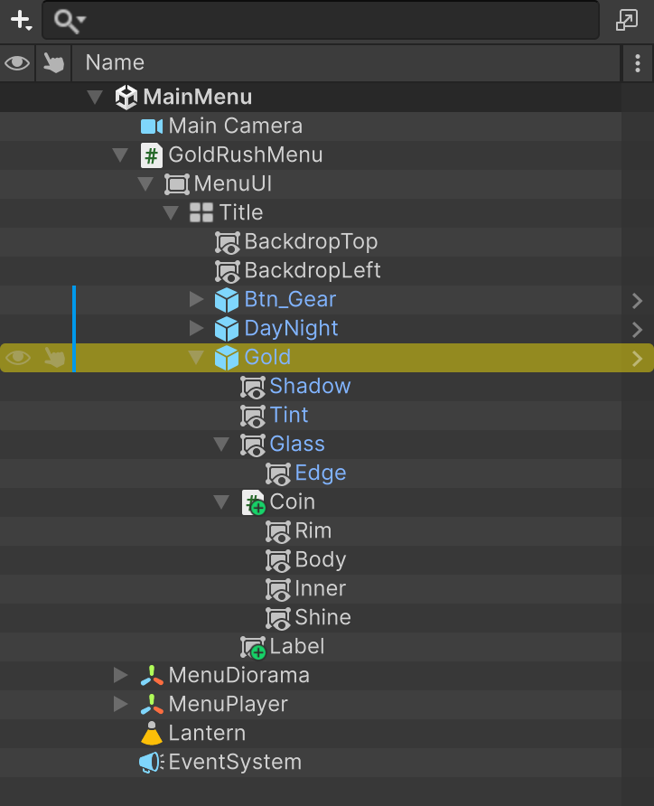
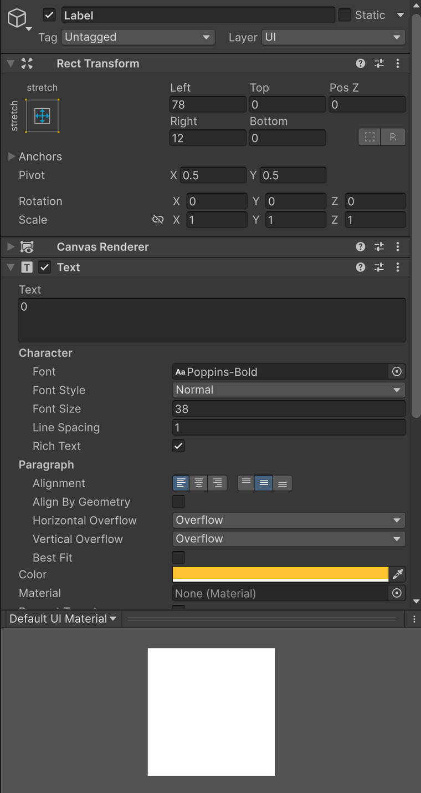
The stars counter
- Drag the
GlassPillprefab ontoTitle. Rename itStars. Pos426, -30, size200 × 76. (Keep the white edge.)
| Object (parent) | Create | Anchor / Pivot | Pos / Size or L B R T | Image / Text |
|---|---|---|---|---|
Icon_Star (Stars) | Empty | middle left, pivot 0, 0.5 | 18, 2 / 44 × 44 | – |
Glyph (Icon_Star) | Image | stretch 0 | – | ic_star, FFC233, Preserve Aspect |
Label (Stars) | Text | stretch | L 72, B 16, R 14, T 0 | 0<size=24><color=#9FB3D9> / 12</color></size>, Poppins-Bold 34, Middle Left, F2F7FF, Rich Text on, Outline (1, -1) |
BarBg (Stars) | Image | bottom left, pivot 0, 0 | 74, 14 / 104 × 8 | pill, FFFFFF · 36, Sliced, PPU 16 |
Bar (BarBg) | Image | Anchors Min 0, 0, Max 0.08, 1 | Left, Top, Right, Bottom 0 | pill, FFC233, Sliced, PPU 16 |
Rich Text lets one Text use tags: <size=24> makes " / 12" smaller and <color=#9FB3D9> makes it blue-grey. The Bar fills from the left: Anchor Max X is the part of the stars you have (from phase 2 the menu sets it).
The tagline
- Drag the
GlassPillprefab ontoTitle. Rename itTagline. - Anchor top centre, pivot
0.5, 1. Pos0, -350. Size480 × 46. - This pill is lower (46), so its round ends need another PPU: set PPU
2.783onShadow,Tint,GlassandGlass/Edge. Tintcolour080D1F · 140(darker, so the text reads on a bright day).Glass/Edgecolour33C7E6 · 204(cyan).- Add a child Text named
Label: stretch 0, textGRAB • DODGE • ESCAPE(three spaces around each dot), Poppins-SemiBold24, Middle Center,F2F7FF · 230. No outline.
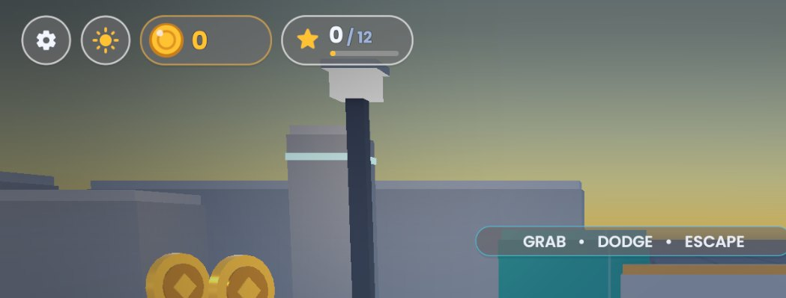
15The logo and the glows
| Object (parent) | Create | Anchor / Pivot | Pos / Size | Other |
|---|---|---|---|---|
LogoGlow (Title) | Image | top centre, pivot 0.5, 1 | 0, -60 / 1500 × 420 | soft, FFC233 · 66. Add Component → Bob: Speed 1.2, Pulse 0.05. |
Logo (Title) | Empty | top centre, pivot 0.5, 0.5 | 0, -228 / 1240 × 200 | Add Component → Logo Title. Font Size stays 176. |
PlayGlow (Title) | Image | bottom left, pivot 0.5, 0.5 | 275, 342 / 730 × 300 | soft, 33C7E6 · 89. Bob: Speed 2.4, Pulse 0.06. |
Put LogoGlow and Logo above Tagline in the Hierarchy (drag them). The order of children is the drawing order: lower in the list = drawn on top.
Logo is empty in the editor. LogoTitle makes its 15 text layers (shadow, 12 depth layers, rim, face) in Awake, when you press Play.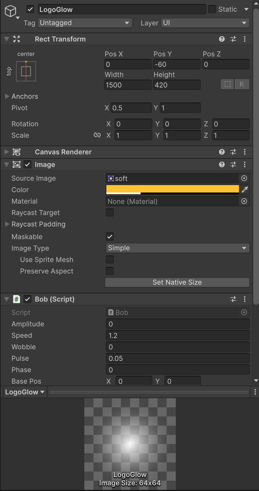
16Glass recipe 3: the big button
The big buttons have more layers: a coloured glass face with a soft gradient, a round icon, a text and a small arrow. Build it once as the LEVELS button (blue, 470 × 90).
- Right-click
Title→ Create Empty. Name itGlassButton. Anchor bottom left (pivot0, 0). Pos40, 166. Size470 × 90. - Add the children in this order. PPU
1.173= 96 ÷ 90 × 1.1.
| Object (parent) | Create | Sprite | Colour | Rect | Other |
|---|---|---|---|---|---|
Halo (GlassButton) | Image | soft | 408CF2 · 0 | stretch L -80, B -60, R -80, T -60 | glow on hover |
Shadow (GlassButton) | Image | rr | 000000 · 56 | stretch L 2, B -8, R 2, T 3 | Sliced, PPU 1.173 |
EdgeGlow (GlassButton) | Image | rro2 | 83B4F7 · 128 | stretch L -3, B -3, R -3, T -3 | Sliced, PPU 1.056 |
Tint (GlassButton) | Image | rr | 080D1F · 89 | stretch 0 | Sliced, PPU 1.173 |
Face (GlassButton) | Image | rr | 408CF2 · 107 | stretch 0 | Sliced, PPU 1.173, raycast. Add Component → Mask (Show Mask Graphic on). |
Gradient (Face) | Image | fadeD | FFFFFF · 66 | Anchors Min 0, 0.35, Max 1, 1; L B R T 0 | lighter top |
Depth (Face) | Image | fadeU | 080D1F · 77 | Anchors Min 0, 0, Max 1, 0.55; L B R T 0 | darker bottom |
TopLine (Face) | Image | pill | FFFFFF · 140 | top stretch, pivot 0.5, 1: Left 24, Right 24, Pos Y -2, Height 2 | Sliced, PPU 64 |
Sweep (Face) | Image | soft | FFFFFF · 0 | middle left, pivot 0.5, 0.5, Pos -120, 0, Size 110 × 216, Rotation Z -22 | light sweep on hover |
Edge (Face) | Image | rro2 | FFFFFF · 204 | stretch 0 | Sliced, PPU 1.173 |
IconDisc (Face) | Image | circle | FFFFFF · 36 | middle left, pivot 0, 0.5, Pos 22.2, 0, Size 57.6 × 57.6 | |
Ring (IconDisc) | Image | ring2 | FFFFFF · 128 | stretch 0 | |
Icon_Levels (IconDisc) | Empty | – | – | middle centre, Size 32.26 × 32.26 | |
Glyph (Icon_Levels) | Image | ic_apps | F2F7FF | stretch 0 | Preserve Aspect |
Content (Face) | Empty | – | – | stretch L 98, B 0, R 56.2, T 0 | the text area |
Label (Content) | Text | – | F2F7FF | stretch 0 | LEVELS, Poppins-Bold 38, Middle Left, Best Fit 18–38. Shadow (0, -1.58) |
Chevron (Face) | Image | tri | F2F7FF · 140 | middle right, pivot 0.5, 0.5, Pos -22.2, 0, Size 19.8 × 19.8, Rotation Z -90 | the little arrow |
Now the components on GlassButton itself:
- Add Component → Button. Transition = None, Navigation = None, Target Graphic =
GlassButton/Face. - Add Component → Button FX. Tick Flat. Base Color =
408CF2. (Button FX finds Halo, Edge, EdgeGlow, Sweep, IconDisc, Content and Chevron by their names.) - Add Component → Menu Action. Action =
levels. - Add Component → Canvas Group. (Button FX uses it to dim the other buttons when you point at one.)
- Drag
GlassButtonintoPrefabs/UI(Original Prefab). Rename the object in the Hierarchy toLEVELSBtn.
Face cuts every child to the rounded shape. That is why the gradient and the light sweep never stick out at the corners.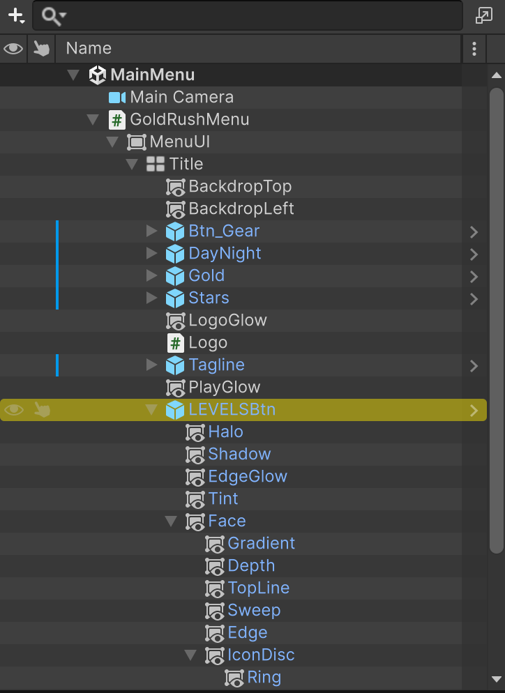
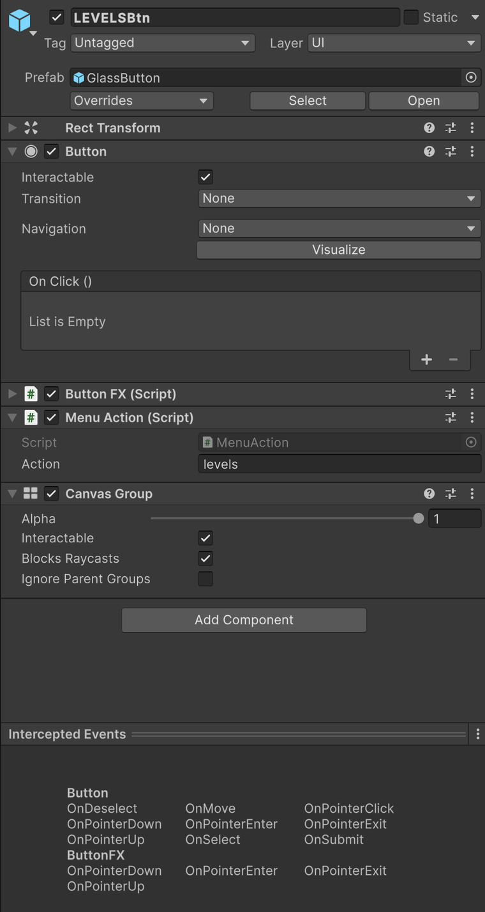
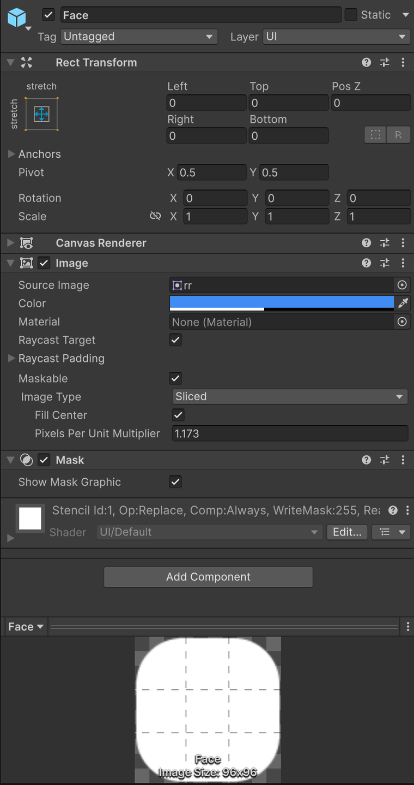
17SHOP, PLAY and the version label
SHOP
- Drag the
GlassButtonprefab ontoTitle. Rename itSHOPBtn. Pos40, 60(size stays470 × 90). - Change these values (they become overrides):
| Object | Change |
|---|---|
SHOPBtn | Button FX → Base Color FF8F33. Menu Action → Action shop. |
Halo | Colour FF8F33 · 0 |
EdgeGlow | Colour FFB67A · 128 |
Face | Colour FF8F33 · 107 |
Face/IconDisc/Icon_Levels | Rename to Icon_Bag. Its Glyph: Source Image ic_shopping_bag. |
Face/Content/Label | Text SHOP |
PLAY
PLAY is bigger (140 high) and has a second line. Bigger height = new PPU (0.754) and bigger parts.
- Drag the
GlassButtonprefab ontoTitle. Rename itPLAYBtn. Pos40, 272. Size470 × 140. - Change these values:
| Object | Change |
|---|---|
PLAYBtn | Button FX → Base Color 33C7E6. Menu Action → Action play. |
Halo | Colour 33C7E6 · 0 |
Shadow, Tint | PPU 0.754 |
EdgeGlow | Colour 7ADBEE · 128, PPU 0.679 |
Face | Colour 33C7E6 · 158 (stronger than the others), PPU 0.754 |
Face/Edge | PPU 0.754 |
Face/Sweep | Size 110 × 336 |
Face/IconDisc | Pos 31.2, 0, Size 89.6 × 89.6 |
Face/IconDisc/Icon_Levels | Rename to Icon_Play, Size 50.18 × 50.18. Its Glyph: ic_play_arrow. |
Face/Content | Left 148, Right 65.2 |
Face/Content/Label | Text PLAY, Font Size 64, Best Fit Max Size 64, Alignment Lower Left, Bottom 61.6. Shadow → Effect Distance 0, -2.67. |
Face/Chevron | Pos -31.2, 0, Size 30.8 × 30.8 |
- Right-click
PLAYBtn/Face/Content→ UI → Legacy → Text. Name itSub. This is the small second line:
| Object (parent) | Rect | Text |
|---|---|---|
Sub (Content) | stretch L 2, B 6, R 0, T 81.2 | LEVEL 1 • TRAINING YARD, Poppins-SemiBold 23, Upper Left, F2F7FF · 199, Best Fit 12–23. No effect. |
From phase 2 the menu writes the next level here, for example LEVEL 3 • KING'S VAULT.
The version label
| Object (parent) | Create | Anchor / Pivot | Pos / Size | Text |
|---|---|---|---|---|
Label (Title) | Text | bottom right, pivot 1, 0 | -32, 28 / 200 × 30 | v1.0, Poppins-SemiBold 22, Lower Right, F2F7FF · 115 |
Check the order. The children of Title must be, from top to bottom:
Title
BackdropTop
BackdropLeft
Btn_Gear
DayNight
Gold
Stars
LogoGlow
Logo
Tagline
PlayGlow
PLAYBtn
LEVELSBtn
SHOPBtn
Label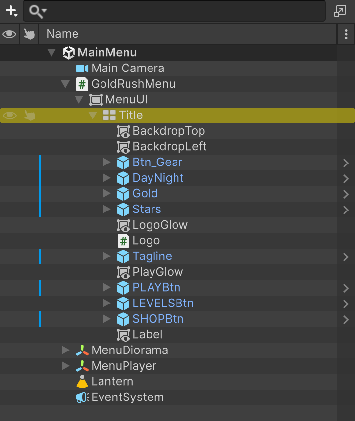
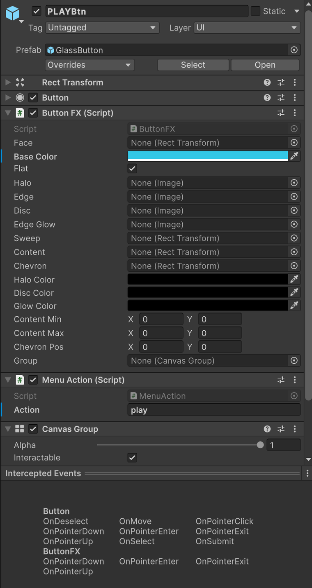
18Connect GoldRushMenu
Select GoldRushMenu. Drag each object from the Hierarchy into its field:
| Header | Field | Drag in |
|---|---|---|
| Stage | Cam | Main Camera |
| Player Root | MenuPlayer | |
| Player Anim | MenuPlayer/Model (it has the Animator) | |
| Lantern | Lantern | |
| Menu Glows | Leave empty (or the three monster Glow lights from the optional step) | |
| Screens | Canvas Rt | GoldRushMenu/MenuUI |
| Title Screen | MenuUI/Title | |
| Entrance (size 3) | PLAYBtn, LEVELSBtn, SHOPBtn (they slide in, in this order) | |
| Filled in at runtime | Title Gold Text | Title/Gold/Label |
| Stars Text | Title/Stars/Label | |
| Play Subtitle | Title/PLAYBtn/Face/Content/Sub | |
| Stars Bar | Title/Stars/BarBg/Bar |
The other fields (Level Screen, Shop Screen, Settings, Top Right, Gold Pill, …) stay empty. You fill them in phase 2. Save the scene.
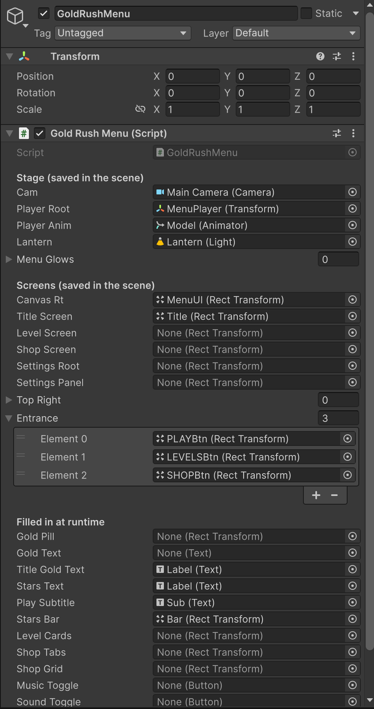
19▶ Press Play
- Open
MainMenu.unityand press ▶ Play. - Move the mouse over the logo and over the buttons.
- Click PLAY, LEVELS, SHOP and the gear. Look at the Console.
- Click the sun / moon button.
- Click ▶ again to stop.
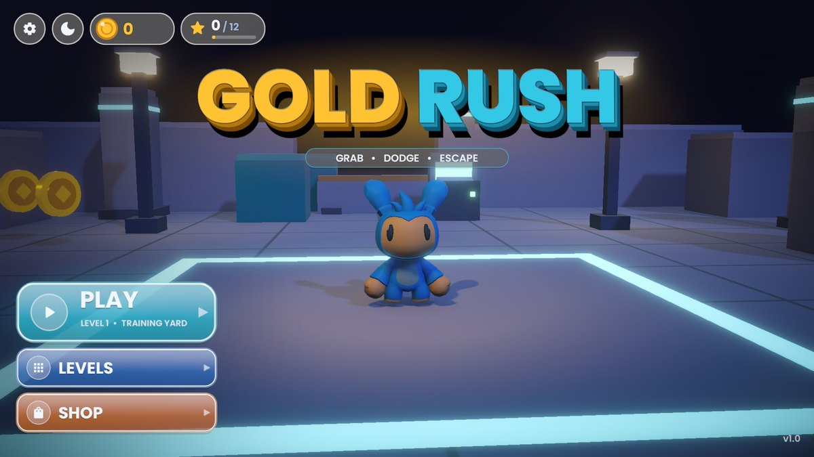
You should see:
- The screen fades in from black. Music plays. It is night: the lamps and the lantern glow, the stage is dark blue.
- The GOLD RUSH logo pops in with a gold and cyan 3D look. It tilts toward the mouse and wobbles when you point at it.
- PLAY, LEVELS and SHOP slide in from the left. A button grows, glows and gets a light sweep when you point at it.
- The hero stands on the cyan pad and waves after 3 seconds, then every 9 seconds. The camera swings slowly left and right.
- A click plays a click sound. The Console says, for example,
[GoldRush] PLAY: you build the first level in phase 3. - The moon button switches to day (sunset sky, lamps off) and back.
- No red errors in the Console.
20Common problems
| Problem | Fix |
|---|---|
Red errors after step 3: The name 'Save' does not exist or 'GoldRushMenu' could not be found. | Normal until you typed Data.cs and GoldRushMenu.cs (steps 4–6). If they stay, check the file names and the namespace GoldRush line. |
Console: GoldRushAssets missing. | The asset must be called exactly GoldRushAssets and be in Assets/GoldRush/Resources (step 7). |
| No music and no click sound. | The Sounds list of GoldRushAssets is empty (step 7). Check that the Game view is not muted (Mute Audio button). |
| Buttons do nothing when I click. | Is there an EventSystem in the scene? Is Raycast Target on for Face (big buttons) or Glass (chips)? Is a big image on top with Raycast Target on (BackdropTop, LogoGlow…)? Untick it. |
Console: Unknown menu action. | A typo in Action. Use exactly play, levels, shop, settings. |
| The buttons do not grow or glow on hover. | Button FX missing, Flat not ticked, or a part has another name (it looks for Halo, Face, Edge, EdgeGlow, Sweep, IconDisc, Content, Chevron). |
| The round ends of a pill or button are too big, or squashed. | Image Type must be Sliced, and all layers of one piece need the same PPU (for a pill: 128 ÷ height). |
| The gradient or the sweep sticks out of the button corners. | Add a Mask to Face (step 16). |
| The logo is missing. | Logo needs the Logo Title component. It only appears in Play mode. |
| The glows do not pulse. | Check Bob: Speed and Pulse must not be 0. |
| The hero stands in a T-pose and never waves. | Model → Animator → Controller must be Hero. Player Anim must be MenuPlayer/Model. The parameter must be named exactly Win. |
| The hero waves once and then freezes. | The Wave clip needs Loop Time and the arrow Win → Idle needs Has Exit Time on, Exit Time 3 (step 8). |
| The hero turns his back to the camera. | MenuPlayer Rotation Y must be 180 and Model Rotation 0, 0, 0. |
| Everything is very dark or very bright in the editor. | Normal: the night mood is set by the script in Play mode. |
| At night the button shows the sun. | Click it twice. (The icon shows the current time of day: moon = night.) |
| UI looks tiny or huge. | Canvas Scaler: Scale With Screen Size, 1920 × 1080, Match 0.5. Game view: Full HD (1920x1080). |
| Text is cut off or shows in the default font. | Font must be Poppins from Resources/Fonts. Horizontal and Vertical Overflow = Overflow (except Best Fit labels). |
More fixes are on the Troubleshooting page. New words are in the Glossary.
Checkpoint package: GoldRush_Phase01_MainMenu.unitypackage
Next: in Phase 2 you build the Levels screen, the Shop and the Settings dialog, and the gold and stars come from the save.